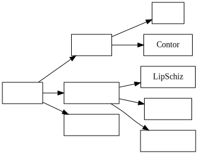

2018年6月7日 张双双 一致连续专题

1. 基本概念
1. 两个定理
定义 (一致连续) 设函数 f 在区间 D 上有定义, 称 f 在区间 I⊂D 上一致连续, 如果对于任意给定的 ε>0, 存在 δ>0, ∀x,y∈I,∣x−y∣<δ 都有
∣f(x)−f(y)∣<ε.
定理 (Cantor) 闭区间上连续函数必一致连续.
2. 判断一致连续的充分条件
设函数 f 在 (−∞,+∞) 上有定义, I⊂(−∞,+∞) 是区间.
-
Lipschitz连续: 存在 L>0 使得 ∀x,y∈I 都有
$$|f(x)-f(y)|\leqslant L|x-y|,$$
则 f 在 I 上一致连续.
-
导函数有界: 若 f 在 I 上可导, 且 ∣f′(x)∣⩽M,∀x∈I, 则 f 在 I 上一致连续.
P.S. 证明要用到微分中值定理.
-
无穷远处收敛: 若 I=[a,+∞),a∈R, 且 x→+∞limf(x)=A 为有限数, 则 f 在 I 上一致连续.
P.S. 证明时, 利用无穷远处收敛将无穷区间分为两部分, 有限部分用 Contor 定理, 另一部分用三分法, 由于两部分一致收敛的区间是有交的, 可以将一致收敛的区间拼在一起.
3. 一致收敛的充要条件
-
定理: 设 f(x) 在 (a,b) 上连续, 则 f(x) 在 (a,b) 上一致连续当且仅当 f(a+),f(b−) 存在且有限.
P.S. 充分性 补充定义 x=a 和 x=b 处函数的值, 并利用 Cantor 定理; 必要性 利用 Cauchy 收敛准则.
推论: 若 f(x) 在 (a,b) 上连续但 f(a+),f(b−) 至少有一个不存在, 则 f(x) 在 (a,b) 上不一致连续.
-
定理 设 f(x) 在 (a,b) 上连续, 则 f(x) 在 (a,b) 上一致连续当且仅当 ∀{xn},{yn}⊂(a,b), n→∞lim(xn−yn)=0 蕴涵 n→∞lim[f(xn)−f(yn)]=0.
P.S. 充分性 反证法; 必要性 写出定义直接验证.
推论 若 f(x) 在 (a,b) 上连续, 存在数列 {xn},{yn}⊂(a,b) 使得 n→∞lim(xn−yn)=0 但 n→∞lim[f(xn)−f(yn)]≠0, 则 f(x) 在 (a,b) 上不一致连续.
-
定理 设 f(x) 在 (a,b) 上连续, 则 f(x) 在 (a,b) 上一致连续当且仅当 ∀{xn}⊂(a,b) 是 Cauchy 列蕴涵 {f(xn)} 是 Cauchy 列.
P.S. 充分性 反证法; 必要性 写出定义直接验证.
推论 若 f(x) 在 (a,b) 上连续, 存在 Cauchy 列 {xn}⊂(a,b) 使得 {f(xn)} 不是 Cauchy 列, 则 f(x) 在 (a,b) 上不一致连续.
试着用上面三种方法证明 f(x)=x1 不一致连续.
2. 考查方式总结
1. 基本概念考察(简单应用)
设 f(x) 在 [0,+∞) 上连续, 且 x→+∞lim[f(x)−sin2x]=2, 证明 f(x) 在 [0,+∞) 上一致连续.
证明: 记 g(x)=sin2x+2, 则显然 g(x) 在 (−∞,+∞) 上一致连续. 对于任意给定的 ε>0, 存在 δ1>0, 当 ∣x−y∣<δ1 时有 ∣f(x)−f(y)∣<3ε. 注意 x→+∞lim[f(x)−g(x)]=0, 对于 ε>0, 存在 M>0, 当 x⩾M 时有 ∣f(x)−g(x)∣<3ε. 因此当 x,y⩾M, ∣x−y∣<δ1 时有
∣f(x)−f(y)∣⩽∣f(x)−g(x)∣+∣g(x)−g(y)∣+∣g(y)−f(y)∣<3ε+3ε+3ε=ε.
对于闭区间 [0,M], 由 Cantor 定理知其在 [0,M] 上一致连续, 即对于 ε>0, 存在 δ2>0, 当 x,y∈[0,M],∣x−y∣<δ2 时有
∣f(x)−f(y)∣<ε.
取 δ=min{δ1,δ2}, 则当 x,y∈[0,+∞),∣x−y∣<δ 时, 有
∣f(x)−f(y)∣<ε.
即 f(x) 在 [0,+∞) 上一致连续. □
2. 直接考一致连续定理等较难的证明题 (待补完)
设函数 f(x) 在 [0,+∞) 上一致连续, 且对任意固定的 x>0, 都有 n→∞limf(x+n)=0 (n∈N+), 证明 x→+∞limf(x)=0.
设函数 f(x) 在 (−∞,+∞) 上一致连续, 证明: 存在非负实数 a,b 使对一切 x∈(−∞,+∞) 都有
∣f(x)∣⩽a∣x∣+b.
3. 结合其他知识综合考察
设函数 f(x) 在 (−∞,+∞) 上有连续的导函数 f′(x), fn(x)=en[f(x+e−n)−f(x)] (n=1,2,…), 证明: {fn(x)} (n=1,2,…) 在任一有限开区间 (a,b) 内一致收敛于 f′(x).
证明:
∣fn(x)−f′(x)∣=∣∣∣∣e−nf(x+e−n)−f(x)−f′(x)∣∣∣∣=∣f′(x+ξ)−f′(x)∣, 0<ξ<e−n.
对于连续函数 f′(x), 在任意有限闭区间 [a,b+1] 上一致连续, 故对于任意给定的 ε>0, 存在 0<δ⩽1, 当 ∣x−y∣<δ,x,y∈[a,b+1] 时, ∣f′(x)−f′(y)∣<ε. 故取合适的 n 使得 e−n<δ, 即取 N=[lnδ1]+1, 则当 n>N 时有 0<e−n<δ, 此时对于 ∀x∈[a,b+1], 有
∣fn(x)−f′(x)∣=∣f′(x+ξ)−f′(x)∣<ε.
即在 (a,b)⊂[a,b+1] 上有 fn(x)⇉f′(x). □
下面一题留作作业:
设 f(x)=x+1x+2sinx1, a>0. 证明:
(1) f(x) 在 [a,+∞) 上一致连续;
(2) f(x) 在 (0,1) 上不一致连续.